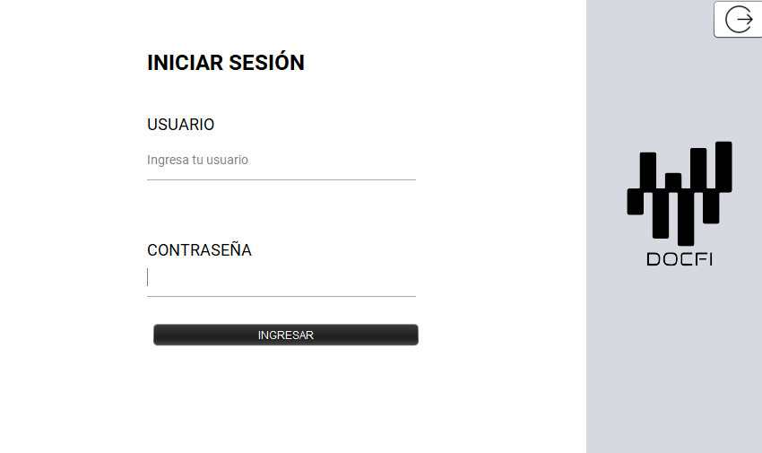
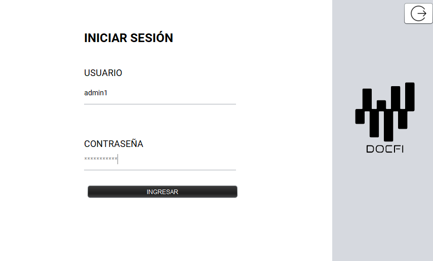
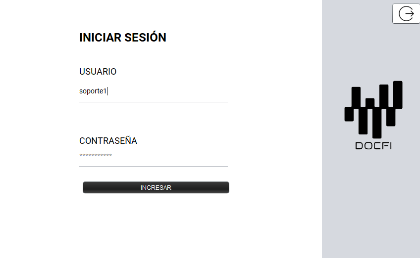

Introducción
La guia nos ayudara a utilizar el software del proyecto DOC-FI creado para ser el area administrativa del ecosistema creado, teniendo dos perfiles Admin y soporte el perfil administrador se encargara de la administracion de reportes y usuarios contando tambien con un sistema de metricas y auditoria , el perifl de Soporte se encargara de tickets y pqrs contara tambien con metricas
Requisitos Previos
- Windows 10 en adelante
Instrucciones de Instalación
Sigue estos pasos para instalar el software:
- Desacargar el msi
- Ejecutar el msi en modo administrador y esperamos unos segundos despues de que termine de descargar el entorno y dependencias se creara un acceso directo en el escritorio
Uso del Software
Aquí se describen las funcionalidades principales del software:
-
LOGIN
Al abrir el software, se mostrará la ventana de inicio de sesión, donde los usuarios con credenciales administrativas o de soporte podrán ingresar según su perfil. Además, la ventana cuenta con la opción de cerrarse desde el ícono ubicado en la parte superior derecha.
-

ingreso como admin.
-

ingreso como soporte